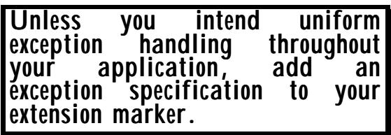

第五章 扩展性、异常处理以及版本标签
(Or: There is always more to learn!) （或者可以说：总是有更多的东西可以学习！）
describes the "extensibility" concept of interworking between version 1 systems and later version 2 systems; 描述了版本 1 系统与后续版本 2 系统之间互操作的“扩展性”概念；
explains the need for an "extension marker" to indicate where version 2 additions might occur; 解释了需要一种“扩展标记”来指示版本 2 的新增内容可能出现的位置；
• describes all the places where an extension marker is permitted; • 描述了所有允许设置扩展标志的位置；
• explains the need for defined exception handling when an extension marker is used; • 说明了在使用扩展标记时，需要明确指定异常处理方式的必要性；
• describes the notation for "version brackets" to group together elements added in later versions; and • 描述了用于将后续版本中添加的元素组合在一起的“版本括号”标记方式；以及
• describes the interaction between extensibility and the requirements for distinct tags. • 描述了可扩展性与不同标签需求之间的相互作用关系。
Presence in appropriate places of the extension marker is key to use of the Packed Encoding Rules (PER) which generate encodings approximately 50% the size of those produced by the Basic Encoding Rules (BER). 在适当的位置放置扩展标记是使用“打包编码规则”的关键。与“基本编码规则”所生成的编码相比，打包编码规则生成的编码大小大约小了 50%。
Writers of ASN.1-based protocols are very strongly encouraged to include extension markers (with defined exception handling) in their version 1 specifications in order to minimise problems in the future. 强烈建议基于 ASN.1 协议的编写者在他们的版本 1 规范中引入扩展标记（同时需对异常情况做好处理措施），以尽量减少未来可能出现的问题。
NOTE — In this chapter, the acronyms BER (Basic Encoding Rules) and PER (Packed Encoding Rules) are used without further explanation. 注意：在本章中，缩写术语 BER（基本编码规则）和 PER（打包编码规则）无需进一步解释即可使用。
What is "extensibility"? "Extensibility" refers to a combination of notational support, constraints on encoding rules, and 什么是“可扩展性”？“可扩展性”指的是一种符号支持体系、对编码规则的限制以及其他相关方面的组合。
You wrote your specification three years ago, there are many fielded implementations - success! But you want to make additions. How do you migrate? What will version 1 systems do with your additions? ASN.1 extensibility gives you control. 您在三年前就已经编写了规范文档，目前已经有许多实现方案被采用——这很成功！不过，您希望进行一些补充。该如何进行迁移呢？版本 1 的系统在引入这些补充功能后会有什么变化呢？ASN.1 的可扩展特性让您可以掌控整个流程。
implementation rules. This support enables a protocol specified (and implemented) as version 1 to be upgraded some years later to version 2 in specifically permitted ways. Provided the version 2 extensions are within the permitted set of extensions (and provided the version 1 protocol was marked as "extensible"), then there will be a good interworking capability between the new version 2 systems and the already-deployed and unmodified version 1 systems. 实施规则。这种支持使得按照版本 1 的规定制定并实施的协议，可以在特定许可的情况下，在几年后升级为版本 2。只要版本 2 的扩展功能属于允许的扩展功能范围（并且版本 1 的协议被标记为“可扩展”），那么新的版本 2 系统与已部署且未修改的版本 1 系统之间将具备良好的互操作性。
The keys to extensibility are: 可扩展性的关键在于：
To ensure that version 2 additions or extensions are "wrapped up" with length counts in encodings, and can be clearly identified by version 1 systems as "foreign material". 为了确保版本 2 的添加或扩展内容能够在编码中通过长度统计信息进行标识，并且能够被版本 1 的系统明确识别为“外来内容”，这一点非常重要。
• To provide a clear specification that version 1 systems should process the parts of the encoding that are not "foreign material" in the normal version 1 way, and should take defined and predictable actions with the "foreign material". • 需要提供一个明确的规范，规定版本 1 的系统应以常规版本 1 的方式处理不属于“外来物质”的编码部分，并且对于“外来物质”部分应采取明确且可预测的处理方式。
• To avoid unnecessary (and verbose) wrappers and identifications in encodings by using notational "flags" on where version 2 additions or extensions may need to be made. • 通过使用表示“标志”来标记需要添加或扩展功能的区域，可以避免在编码中出现不必要的、冗长的封装和标识操作。
For the extensibility concept to be successful, all three of these components must be present. 要使可扩展性的概念能够成功实施，这三个要素都必须同时存在。
A detailed discussion of possible exception handling actions is given in Section I Chapter 7. 关于可能的异常处理措施的详细讨论，请参见第 7 章的第 1 节。
With the BER encoding rules, all fields have a tag and a length associated with them, covering the first point above, but producing the verbosity we want to avoid in the third point. BER itself says nothing about point 2. Some forward-thinking application designers did include text such as: "Within a SEQUENCE or SET, implementations should ignore any TLV which has a tag that is not what is expected in their version", but this was by no means universal, and it was in general not possible to specify different action on "foreign material" in different parts of the protocol. With the PER encoding rules, length wrappers are often missing, and tags are always missing. PER has to be told where to insert length wrappers and to encode presence or absence of version 2 material if extensibility is to be achieved without undue cost. This is the primary purpose of the "extension marker". 根据 BER 编码规则，所有字段都带有标签和长度信息，这满足了上述第一个要求。不过，这样的描述过于冗长，这正是我们想要避免的情况。BER 本身并没有对第二点做出任何规定。一些具有前瞻性的应用设计者确实加入了类似这样的说明：“在序列或集合中，实现方应忽略那些标签不符合他们版本要求的元素”。不过，这种做法并非普遍适用，而且通常无法在协议中为不同的“外部元素”指定不同的处理方式。而根据 PER 编码规则，往往不需要使用长度标签，同时也不需要明确标注是否包含第二版本的要素。为了实现可扩展性，同时又不造成不必要的成本负担，就必须明确如何插入长度标签，以及如何表示是否包含第二版本的要素。这就是“扩展标记”的主要作用。
What does the extension marker look like? We have already encountered it in Figure 21 and Figure 22 of Section I Chapters 3 and 4. It is the ellipsis (three dots) following the "sales" alternative in line 26 of Figure 21, and following the "sales-data" element in Figure 22. 那个扩展标记是什么样子的呢？我们已经在第一节第 3 章和第 4 章的图 21 和图 22 中遇到过它。图 21 第 26 行中“sales”选项后面的三个点符号，以及图 22 中“sales-data”元素后面的部分，都是这种扩展标记的表现形式。
Look out for the three little dots. Put them in as often as you like, they cost you little on the line. (Zero in BER, one bit in PER). 注意那三个小点。你可以根据需要随时将它们放置进去，它们带来的收益非常有限。（在 BER 中占 0 点，在 PER 中占 1 点）
If the reader now refers to Figure II-3 in Chapter 3, we see another element being added after the extension marker in the "Wineco-protocol" CHOICE of Figure 21. This is our version 2 addition. 如果读者现在参考第 3 章中的图 II-3，会看到在图 21 中“Wineco 协议”选项中的扩展标记之后，又增加了一个元素。这就是我们的版本 2 的新增内容。
(Note that an ellipsis is also used following "WITH COMPONENTS {". This is a separate use of three dots, pre-dating the extensibility work, and should not be confused with extensibility.) （请注意，在“WITH COMPONENTS {”之后也使用了省略号。这其实是另一种用法，与可扩展性功能不同，不应将其与可扩展性功能混淆。）
It is strongly recommended that all uses of extensibility be accompanied by an exception specification, unless the same exception handling is specified for the entire application. 强烈建议在所有使用扩展性的情况下都附带一个异常规范，除非整个应用程序都采用了相同的异常处理机制。
The exception specification makes clear what implementors of version 1 systems are supposed to 该例外规定明确指出了第 1 版系统的实现者应当遵循的行为规范。

do with "foreign material" in this position in the message (as in Figures 21 and 22), but this recommendation is not universally followed at this time. 在消息中，这个位置使用了“外国材料”这个词（如图 21 和 22 所示），不过目前这一建议并没有被普遍遵循。
The syntax of the exception specification (which can appear immediately after any ellipsis which indicates extensibility) is either an integer value, or the name of any ASN.1 type followed by a colon followed by a value of that type. Typical examples would be: 异常指定的语法格式（可以出现在表示可扩展性的任何省略号之后）要么是一个整数值，要么是一个 ASN.1 类型的名称，后面跟着一个冒号，再后面跟着该类型的一个值。典型的例子如：
The first two might be used where there are a list of numbered exception handling procedures, and would identify which to apply in each position of added material. The third might be used where exceptions always give error reports, and the value is just the text for the error report. The final example might be used where "My-Type" has been defined as a SEQUENCE with the first element an enumeration of possible actions (for example, "abort", "returnError", "ignore", "treatAsMaximum" and the second (optional) element as a character string qualifying those actions. Note that "treatAsMaximum" might be an appropriate exception handling procedure for an ellipsis that was within a constraint, whilst "Ignore" is clearly only applicable to added material in a SEQUENCE or SET. For an unexpected CHOICE alternative, "returnError" might be desired. ASN.1 provides the notational tools, but only the application designer can decide how to use them appropriately. (For more discussion, see Section I Chapter 7.) 前两个选项适用于那些包含一系列编号的异常处理程序的场景，它们可以明确指出在添加何种内容时应该应用相应的处理程序。第三个选项适用于那些总是会生成错误报告的异常情况，此时所提供的值只是错误报告的文本。最后一个选项适用于“My-Type”被定义为一个序列的情况，该序列的第一个元素为可能的操作枚举（例如“abort”、“returnError”、“ignore”、“treatAsMaximum”），第二个元素则是一个字符串，用于描述这些操作的具体细节。需要注意的是，“treatAsMaximum”可能是适用于符合特定约束条件的省略情况的异常处理程序，而“Ignore”则显然只适用于出现在序列或集合中的添加内容。对于意外的情况，可能需要使用“returnError”来处理。1 提供了符号工具，但如何正确使用这些工具则取决于应用程序的设计者。（更多讨论请参见第 I 部分第 7 节。）
In the first ASN.1 extensibility specification, ellipses could be placed (and extensions added serially after them) as follows (illustrations in Figure II-9 give the version 1 text followed by the version 2 text): 在第一个 ASN.1 扩展性规范中，可以放置省略号（并且可以在这些省略号之后连续添加更多的扩展项）。如图 II-9 所示，版本 1 的文本之后就是版本 2 的文本：
• At the end of any SEQUENCE or SET or CHOICE (see figures 21 and II-3). • 在任何序列、集合或选择题中，在每一部分的末尾处（参见图 21 和图 II-3）。
• Wherever there is a constraint (see figure II-9). • 在任何存在限制条件的地方（参见图 II-9）。
• At the end of the list of enumerations in an ENUMERATED type (see figure II-9). • 在 ENUMERATED 类型的枚举列表中末尾（参见图 II-9）。
INTEGER (0..255, ... ) or INTEGER (0..255, ... !1)
INTEGER (0..255, ..., 0..65535) INTEGER (0..255, ... !1, 0..65535)
ENUMERATED {red, blue, green, ... }
ENUMERATED {red, blue, green, ..., purple}
Figure II-9: Illustrations of extensibility marker use
An early addendum to the ASN.1 extensibility specification allowed the insertion point for new material in a SEQUENCE, SET or CHOICE (but nowhere else) to be not just at the end, but in the middle. This was flagged by the use of two ellipsis elements as shown in Figure II-10. Again we have included the exception specification to remind implementors that the handling of foreign material at this position is specified in clause 50 of the application specification. 在 ASN.1 可扩展性规范的早期修订中，允许在 SEQUENCE、SET 或 CHOICE 结构中，新元素的插入点不再仅限于末尾位置，也可以位于中间。这一修改是通过使用两个省略号来表示的，如图 II-10 所示。此外，我们还添加了例外说明，以提醒实现者：此类情况下对外部元素的处理方式应在应用规范的第 50 条中进行规定。
SEQUENCE
{field1 TypeA,
field2 TypeB,
... ! PrintableString : "See clause 50",
-- Version 2 material goes here.
...
field3 TypeC}
Figure II-10: An insertion point between elements 2 and 3
The same addendum introduced version brackets, with an opening bracket of a pair of "[[" and a closing bracket of "]]". These were introduced to reduce the number of length wrappers needed at any given insertion point to the minimum necessary - one wrapper for each new version, 同样的附加规则引入了版本括号的表示方式，即开始使用一个“[”字符作为开始括号，结尾使用“]”字符作为结束括号。这样设计是为了将每个新版本所需的包装次数减少到最低限度——每个新版本只需要一个包装。
Version brackets not only save bits on the line but provide a historical record of the additions that have been made to the protocol. 版本标签不仅节省了行数，还记录了协议中发生的所有修改历史。
and also because application designers felt they would like to be able to identify for historical purposes what was in version 1, version 2, version 3, etc. With extensions for versions 2 and 3, the above sequence could look like figure II-11. 此外，应用程序设计师们也希望能够记录下各个版本的具体内容，以便将来进行历史参考。对于版本 2 和版本 3 来说，这样的序列可以像图 II-11 所示。
SEQUENCE
{field1 TypeA,
field2 TypeB,
... ! PrintableString : "See clause 59",
-- The following is handled by old systems
-- as specified in clause 59.
[[ v2-field1 Type2A,
v2-field2 Type2B ]],
[[ v3-field1 Type3A,
v3-field2 Type3B ]],
... ,
-- The following is version 1 material.
field3 TypeC}
Figure II-11: An insertion point with two version additions
It should be noted that extensibility can be identified independently for each SEQUENCE, SET and CHOICE, even if these constructs are nested within other extensible constructs. However, within any one such construct there can be at most one insertion point at the outer level of that construct, with material being successively added at the insertion point after any already inserted material. 需要注意的是，可扩展性可以独立地为每个序列、集合和选择结构进行定义，即使这些结构嵌套在其他可扩展结构中。然而，在任何一个这样的结构中，外部层面最多只能有一个插入点，而数据则会在该插入点之后依次被添加进去。
Version brackets should normally be employed even if there is only one element added, to provide a clear documentation of the revision history. 即使只添加了一个元素，也应该使用版本标签来清晰地记录修改的历史。
Note also that version brackets can only be inserted in SEQUENCE, SET, and CHOICE constructs, not in ENUMERATED or constraints. 请注意，版本区间只能用于 SEQUENCE、SET 和 CHOICE 类型的数据结构，而不适用于 ENUMERATED 类型或约束条件。
At the time of writing this book (mid-1999), there are a number of published specifications that have inserted extension markers, and some that contain added material and version brackets. 在撰写这本书时（1999 年中期），已经有一些公开的规范文件中包含了扩展标记，还有一些文件则增加了额外的内容和版本说明。
You will encounter what appears to be an extensible empty "table constraint" (see later) in a number of specifications. This relates to the use of Information Object Classes, and discussion of it is deferred until Chapter 7 of this Section. 在许多规范中，你会遇到一种看似可扩展的“表约束”机制（详见后文）。这一机制与信息对象类的使用有关，其相关讨论将推迟到本部分的第 7 章进行。
When tagging was discussed in the previous chapter, it was noted that extensibility gave rise to some further requirements on the distinctness of tags. 在上一章中讨论标签时，人们指出可扩展性带来了一些关于标签唯一性的额外要求。
These requirements arise because if there are several extension markers in an ASN.1 type, they may have different exception specifications associated with them, and it is therefore important for version 1 systems to be able to unambiguously associate "foreign" material with a specific insertion point and hence exception specification. 这些要求的存在是因为，在 ASN.1 类型中，如果存在多个扩展标记，那么它们可能具有不同的异常规范。因此，对于版本 1 的系统来说，能够明确地将“外部”元素与特定的插入点以及相应的异常规范关联起来是非常重要的。
NOTE — Explanations given in this text may be hard to understand without a clear understanding of the BER encoding rules. Readers that are progressing sequentially through this book should either just accept that there are further rules on tagging that are "ad hoc" and curious, or else read the text on BER and return to this section. Sorry! I can do no better! 注意：如果不清楚 BER 编码规则的话，那么本文中的解释可能会难以理解。那些按照顺序阅读本书的读者，要么接受存在一些“临时性”且令人困惑的标签规则，要么阅读有关 BER 的章节后再回到这一部分。抱歉！我无法给出更好的解释了！
It is fortunate (as PER does not encode tags) that there are no problems in this area with a PER encoding. However, with BER, constructions like the following give real problems: 幸运的是（因为 PER 并不对标签进行编码），在 PER 编码方式下不会出现相关问题。不过，对于 BER 编码方式来说，以下几种构造方式确实会带来实际问题：
$$ \begin{array}{l} \text {Example1}: := \text {SEQUENCE} \ \quad {\text {field1 CHOICE} \ \quad {\text {alt1 INTEGER,} \ \quad \dots ! 1 } \text {OPTIONAL,} \ \quad \dots ! 2 } \end{array} $$
or 或
Example2 ::= CHOICE {alt2 CHOICE {alt3 INTEGER, ...!3 }, ...!4} 示例 2：= 选择列表 {alt2 选择列表 {alt3 整数，...!3}，...!4}
Now suppose that in version 2 additions are made at the insertion points with exception handling !1 or !2. If "field1" had not been optional it would have been easy - presence of foreign material before the presence of "alt1" is clearly a !1 case, and after it a !2 case. But with field1 being optional, there is no way for version1 systems to determine whether we have new material at !1, or !1 being missing and new material at !2. A similar problem arises with new material at !3 or !4. 现在假设在版本 2 中，插入点处进行了添加操作，同时包含了异常处理机制！1 或！2。如果“field1”不是可选的，那么情况就很简单了——在“alt1”出现之前出现外来物质，显然属于！1 的情况；而在“alt1”出现之后出现外来物质，则属于！2 的情况。但是，由于 field1 是可选的，因此版本 1 的系统无法判断是在！1 位置有新的物质，还是在！2 位置有新的物质。类似的问题也出现在！3 或！4 位置有新的物质的情况。
Note that the problem is not with the tag on any added material, the problem is fundamental to the use of extensibility in these constructs. 需要注意的是，问题并不在于任何附加材料上的标签，而在于这种结构在利用扩展性功能时的根本性问题。
Unless BER were to be changed (shrieks of horror - BER long precedes extensibility!) it is necessary to make the two above (and other similar) constructs illegal. How to do that? 除非改变 BER 的设定（惊恐的尖叫——BER 的存在早已决定了其不可扩展的特性！），否则就必须禁止上述这两种以及类似的结构。那么，该如何实现这一点呢？
The ASN.1 Specification adopts a slightly curious approach. It says that wherever there is an extension marker, you should add (at the end of any existing extensions) a "conceptual element" whose tag matches that of no other element except other "conceptual element"s. Then you apply rules about when distinct tags are required, and if they are satisfied, you are legal (and there will be no problems for a version 1 system to unambiguously assign foreign material to a single insertion point). ASN.1 规范采用了一种略显奇特的命名方式。该规范规定，每当出现扩展标记时，都需要在现有扩展的末尾添加一个“概念元素”标签，且该元素的标签必须是独一无二的，没有其他“概念元素”与之重复。接着，会制定关于何时需要使用不同标签的规则；如果这些规则得到满足，那么这种命名方式就是合法的（对于版本 1 的系统来说，将外部材料分配到单个插入点并不会产生任何问题）。
In the first of the above cases, addition of the conceptual element in the !1 position means that "field1" brings to the table both the INTEGER tag and the tag of the conceptual element. The latter clashes with the tag of the following (mandatory) conceptual element in the !2 position, so the construction is illegal. 在上述第一种情况中，将概念元素添加到!1 位置意味着“field1”同时包含了 INTEGER 标签和该概念元素的标签。而后者会与下一个（强制性的）概念元素的标签产生冲突，因此这种构造方式是无效的。
In the second of the above cases, "alt2" brings to the table the tag of the conceptual element (as well as the INTEGER tag), which again clashes with the tag of the conceptual element in the extension !4. So again we have illegality. 在上述第二个案例中，“alt2”标签包含了概念元素的标签（以及 INTEGER 标签），这再次与扩展版本！4 中的概念元素标签产生了冲突。因此，这里同样存在合法性问题。
(Please refer to Figure 999 again!) It is important to note here that this is a distinct complexity with extensibility. Having given earlier advice that you should use AUTOMATIC TAGS, and then forget about tagging, I am now saying (and the ASN.1 Specification is saying) that in order to determine whether some extensibility constructions are legal or not requires that you have a fairly sophisticated understanding of tagging. Of course, if you use a tool such as that provided by OSS to check your ASN.1, it will instantly tell you that you have broken the rules, although whether you will understand the error message in these cases is more questionable! （请再次参考图 999！）需要注意的是，这里所讨论的复杂性具有可扩展性。之前我们建议大家使用自动标签机制，但之后又建议放弃使用标签。现在我要说（根据 ASN.1 规范），要判断某些可扩展构造是否合法，就需要对标签机制有相当深入的理解。当然，如果你使用 OSS 提供的工具来检查你的 ASN.1 文件，它会立即提示你违反了规则。不过，在这种情况下，你是否能够理解错误提示的内容则值得怀疑！
• If a CHOICE is OPTIONAL in some SEQUENCE, make sure it is not the last element before an extension marker, or make sure it is not itself extensible. (And don't follow it by another extensible CHOICE!) • 如果某个选项在某个序列中是可选的，请确保它不是扩展标记之前的最后一个元素，或者确保它本身并非可扩展的选项。（并且，不要在其之后再出现另一个可扩展的选项！）
• If a CHOICE is in a SET, make sure that only one of the CHOICE and the SET are extensible. • 如果某个选项属于某个集合，请确保该选项本身以及该集合都是可扩展的。
• Never put an extensible CHOICE in another extensible CHOICE. • 永远不要将一个可扩展的选择置于另一个可扩展的选择之中。
In summary, treat extensible CHOICEs like radio-active material - keep them well apart, and clearly separated from other extension markers! If you do that, there will never be any problems. 总结来说，对待可扩展的 CHOICE 元素就像对待放射性物质一样——把它们分开放置，并且与其他扩展标记明确区分开来！只要做到这一点，就不会有任何问题了。
These rules really are ad hoc, but they are simple to apply, and will eliminate the problems described above. 这些规则确实是临时制定的，但它们很容易实施，并且能够解决上述提到的问题。
Of course, if you break these rules, you are writing de jure illegal ASN.1, and a good tool will tell you so, and probably refuse to encode it! But if you encode it yourself .... well, problems only arise in practice if you have different exception handling on the various extensions. Just keep the above points in mind, and you should be OK. 当然，如果你违反这些规则，那么你编写的就是法律上讲是非法使用的 ASN1 代码。一个好的工具会提示你这一点，并且可能会拒绝进行编码！但如果你自己进行编码的话……那么只有在处理不同扩展时采用不同的异常处理方式时，才会出现问题。只要记住上述要点，应该就不会有麻烦了。
We have described the extension marker and its association with the exception specification, and the complications arising from BER, which give rise to the need to produce some complex rules on when apparently innocuous extension markers are illegal. 我们已经描述了扩展标记及其与异常规范的关联，以及由 BER 引起的各种复杂情况。这些情况使得有必要制定一些复杂的规则，以确定那些看似无害的扩展标记何时会变得非法。
Finally, it is important to note that the interworking that extensibility provides between version 1 and version 2 systems is dependent on the extension marker being present in version 1, and in changes being made to the protocol only as permitted by the extensibility provisions (addition of elements, alternatives, enumerations, at the insertion point, and relaxation of constraints). 最后，需要指出的是，版本 1 和版本 2 系统之间所提供的是扩展性带来的互操作能力，这一能力取决于版本 1 中是否存在扩展标记。而协议上的修改则只能在扩展性规定的范围内进行——比如在插入点添加元素、引入替代方案、增加枚举项，或者放宽某些约束条件。
If changes are made to a specification that are not covered by the extensibility provisions (such as random insertion of new elements), then the encodings of that new version are likely to produce unpredictable effects if sent to a version 1 system. Similarly, insertion of an extensibility marker in version 2 which was not present in version 1 means that encodings of the version 2 material will produce unpredictable effects if sent to version 1 systems. 如果某个规范发生了超出可扩展性的修改（比如随机插入新的元素），那么当将这些新版本的编码发送给版本 1 的系统时，很可能会产生不可预测的效果。同样，如果在版本 2 中加入了原本不存在的可扩展性标记，那么当将这些版本 2 的编码发送给版本 1 的系统时，同样会产生不可预测的效果。
The unpredictability described above may be simply between "Will they abort in some way or will they ignore the apparent error?", but could be "With encodings of some version 2 values version 1 systems will think they are correct encodings of totally unrelated version 1 values" and will act accordingly, which could be very dangerous. So it is generally important to prevent encodings of version 2 types that do not obey the extensibility rules from being sent to version 1 systems. This can, of course, be done in many ways, the most common being some form of version negotiation when a connection is first established. 上述不可预测性可能仅仅表现为“系统会以某种方式放弃处理，还是会忽略这个明显的错误？”这样的问题。但实际上，它可能是“在某些版本 2 的编码下，版本 1 的系统会误以为这些编码是正确的，从而采取相应的行动，这可能会非常危险”。因此，通常重要的是要防止那些不遵守可扩展性的版本 2 编码被发送到版本 1 的系统中。当然，这可以通过多种方式来实现，最常见的方法就是在连接建立时进行某种形式的版本协商。
Extensibility and exception handling are powerful tools, and enable highly optimised encoding rules to be used. They are safe if the rules governing their use are obeyed. 可扩展性和异常处理是非常强大的工具，它们使得能够使用高度优化的编码规则。只要遵守相关的使用规则，这些工具就是安全的。
It is, however, very important to insert extension markers fairly liberally into version 1 specifications (or to use the EXTENSIBILITY IMPLIED notation). 不过，非常重要的是要在版本 1 的规范中大量使用扩展标记（或者使用“可扩展性隐含标记”）。